Gói nước mẫu: SrRubfish Water VFX 02 + NamuFX Stylized Water
53 prefab, chụp trong Unity 24 khung/giây, góc ngang chúc 18°. Dùng làm mẫu để làm lại bộ nước trong trận.
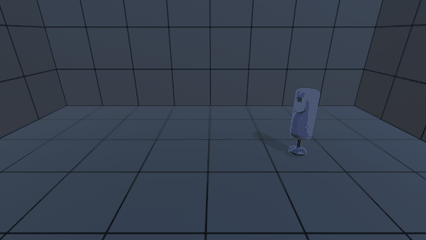
Demo_01_Slashes-Projectiles_Explosions NamuFX · 144 khung · 6.00s
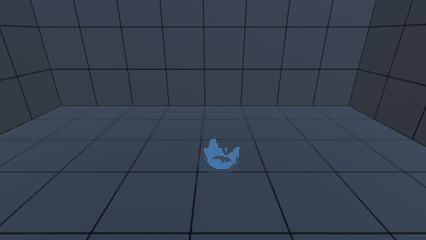
Demo_02_Orb-Buff-Environmental NamuFX · 288 khung · 12.00s
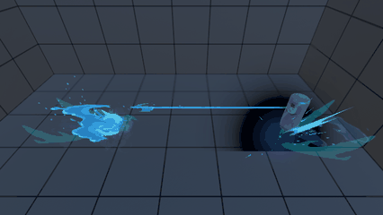
Demo_03_Wave-Laser NamuFX · 144 khung · 6.00s
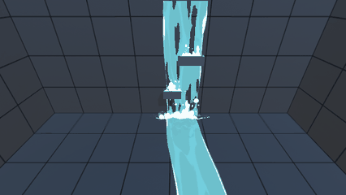
Demo_04_Waterfall NamuFX · 144 khung · 6.00s
Bubble_Explosion NamuFX · 72 khung · 3.00s
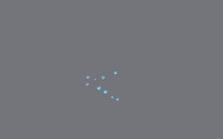
Bubbles_Burst NamuFX · 45 khung · 1.88s
Bubbles_Vertical_Loop NamuFX · 48 khung · 2.00s
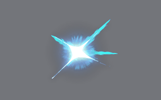
Hit_01 NamuFX · 40 khung · 1.67s
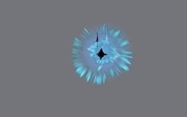
Hit_02 NamuFX · 53 khung · 2.21s
Water_Ball_Explosion NamuFX · 72 khung · 3.00s
Water_Beam NamuFX · 72 khung · 3.00s
Water_Explosion NamuFX · 50 khung · 2.08s
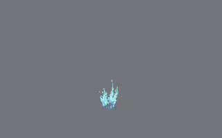
Water_Impact NamuFX · 72 khung · 3.00s
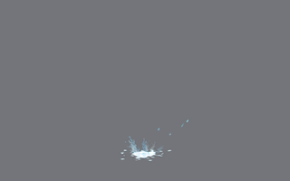
Water_Splash_A NamuFX · 59 khung · 2.46s
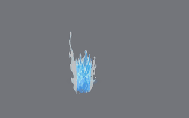
Water_Splash_B NamuFX · 72 khung · 3.00s
Water_Splash_Multiple NamuFX · 64 khung · 2.67s
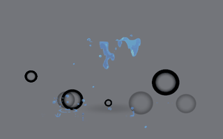
FX_PF_FallingWater_01 Rubfish · 72 khung · 3.00s
FX_PF_Lava_SimpleSplash_01 Rubfish · 72 khung · 3.00s
FX_PF_MagicWater_OrbLoop Rubfish · 72 khung · 3.00s
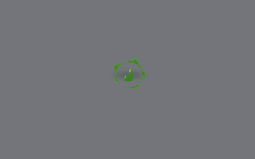
FX_PF_Poison_SimpleSplash_01 Rubfish · 72 khung · 3.00s
FX_PF_RainExample Rubfish · 48 khung · 2.00s
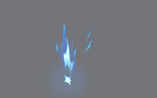
FX_PF_SimpleWaterImpact_01 Rubfish · 72 khung · 3.00s
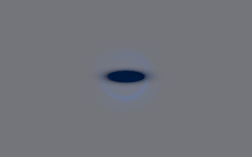
FX_PF_WaterBuff_Loop Rubfish · 72 khung · 3.00s
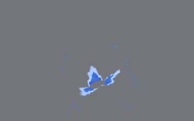
FX_PF_WaterGround_01 Rubfish · 72 khung · 3.00s
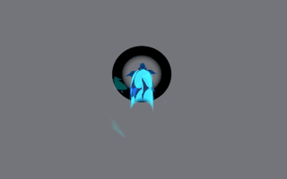
FX_PF_WaterLaser_Burst Rubfish · 72 khung · 3.00s
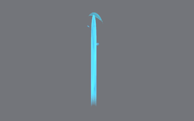
FX_PF_WaterLaser_Cast Rubfish · 48 khung · 2.00s
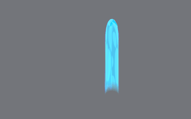
FX_PF_WaterLaser_Dissolve Rubfish · 72 khung · 3.00s
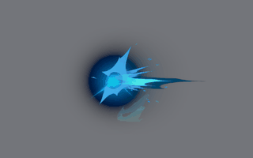
FX_PF_WaterLaser_Impact Rubfish · 72 khung · 3.00s
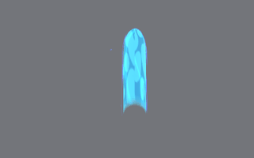
FX_PF_WaterLaser_MainLaser Rubfish · 72 khung · 3.00s
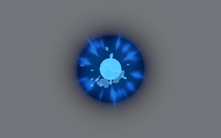
FX_PF_WaterOrb_Charge Rubfish · 72 khung · 3.00s
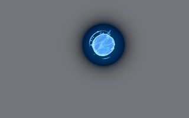
FX_PF_WaterOrb_Dissolve Rubfish · 72 khung · 3.00s
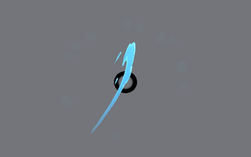
FX_PF_WaterOrb_Loop Rubfish · 72 khung · 3.00s
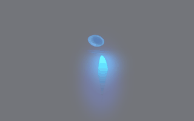
FX_PF_WaterSimpleProjectile_Traveling Rubfish · 72 khung · 3.00s
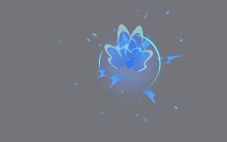
FX_PF_Water_FoamImpact Rubfish · 72 khung · 3.00s
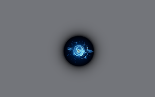
FX_PF_Water_Grenade_Explosion Rubfish · 72 khung · 3.00s
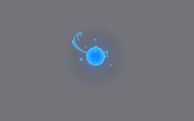
FX_PF_Water_Grenade_Preexplosion Rubfish · 72 khung · 3.00s
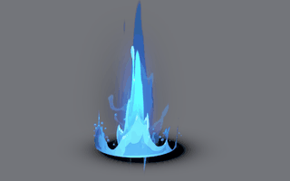
FX_PF_Water_ImpactGround Rubfish · 72 khung · 3.00s
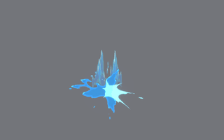
FX_PF_Water_Impact_01 Rubfish · 72 khung · 3.00s
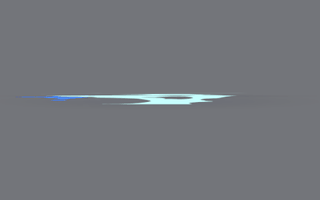
FX_PF_Water_LineaSlash_01 Rubfish · 72 khung · 3.00s
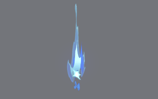
FX_PF_Water_Projectile_Cast Rubfish · 72 khung · 3.00s
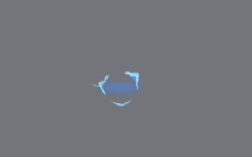
FX_PF_Water_SimpleSplash_01 Rubfish · 72 khung · 3.00s
FX_PF_Water_SlashBasic_01 Rubfish · 72 khung · 3.00s
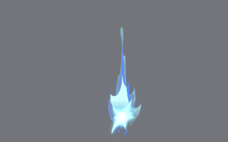
FX_PF_Water_StrongProjectile_Cast Rubfish · 72 khung · 3.00s
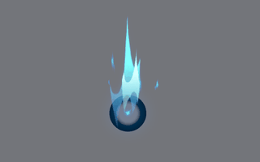
FX_PF_Water_StrongProjectile_Impact Rubfish · 72 khung · 3.00s
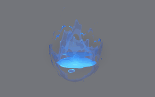
FX_PF_Water_StrongProjectile_Traveling Rubfish · 72 khung · 3.00s
FX_PF_Waterfall_MainFoam Rubfish · 72 khung · 3.00s
FX_PF_Waterfall_SingleFoam_01 Rubfish · 72 khung · 3.00s
FX_PF_Waterfall_SingleFoam_02 Rubfish · 72 khung · 3.00s
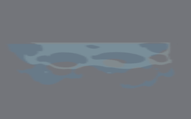
FX_PF_Waterfall_UnderwaterFoam Rubfish · 72 khung · 3.00s
FX_PF_WaveAttack_Burst Rubfish · 72 khung · 3.00s
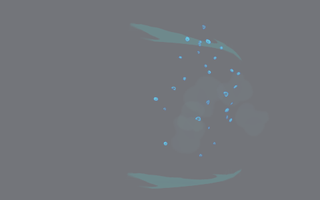
FX_PF_WaveAttack_Cast Rubfish · 72 khung · 3.00s
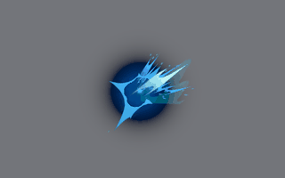
FX_PF_WaveAttack_Impact Rubfish · 72 khung · 3.00s
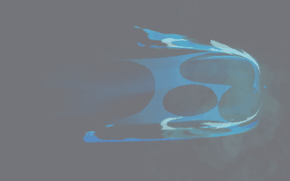
FX_PF_WaveAttack_Projectile Rubfish · 72 khung · 3.00s